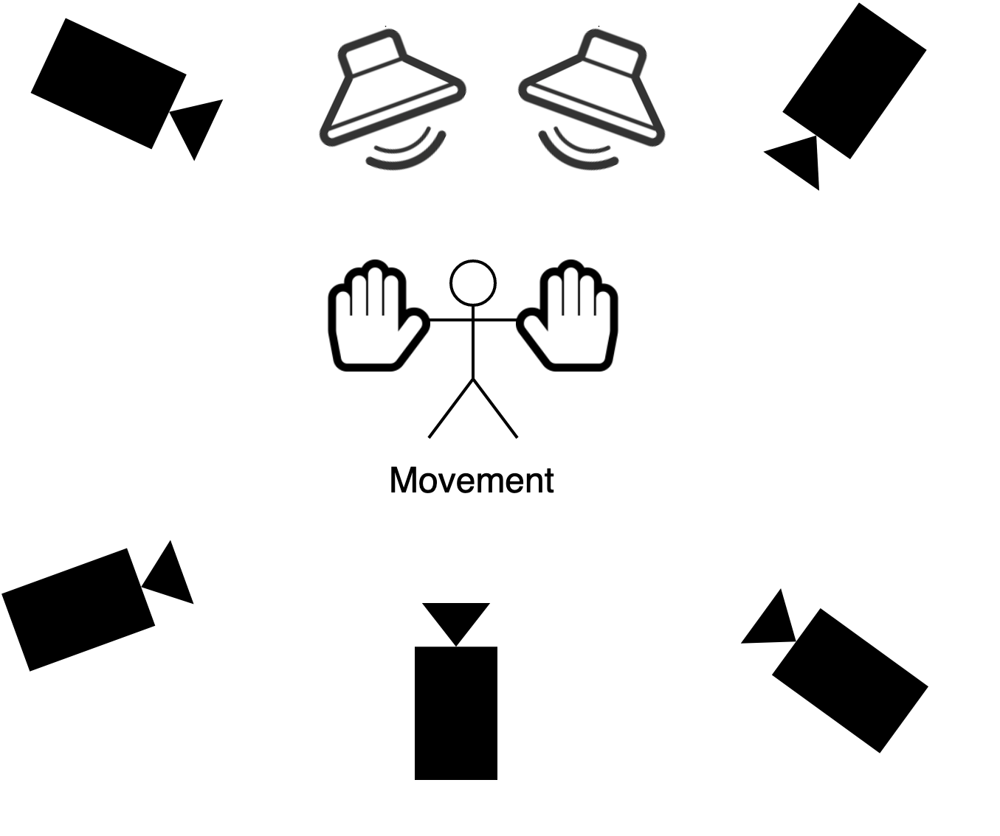
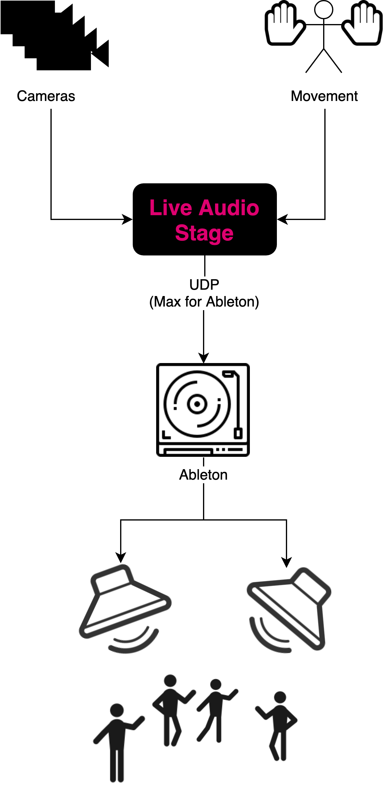

Live Audio Stage (LAS) is an interactive system that controls an audio composition through the movement of a person. The goal behind the project is to unify Computer Science and Music Theory concepts within one project as part of the Digital Humanities initiative at University of Haifa.
Team members:
Supervisors:
Mentors:
GitHub project: kamaln7/live-audio-stage


We use Optitrack, a 3D motion tracking system that tracks objects using cameras in a room. Each hand is fitted with a glove with infrared markers on it. This allows the system to track each hand as a single object.
For the audio, we use Ableton Live as a digital audio workstation. Ableton Live is very flexible and allows us to compose complex music.
Both systems are inherently unrelated. Our main focus is to integrate both platforms. The first stage of our project was to come up with a way to remotely control Ableton and change parameters relating to the music that is being played. Once we completed that step, we needed to map the camera movement to the parameters in Ableton.
To do that, we wrote a program that connects to Optitrack. First, it reads real-time data about the location of both objects (gloves) in the room. After receiving this information from Optitrack, the program uses formulas that we created and tuned and connects to Ableton Live through Max for Live (a scripting platform for Ableton Live) using a plugin that we developed. The plugin receives data from our program and controls specific parameters within Ableton.
The end result is an audio composition that is directly affected and in a way composed by the movement of a person or two in the room like so:
config.py.